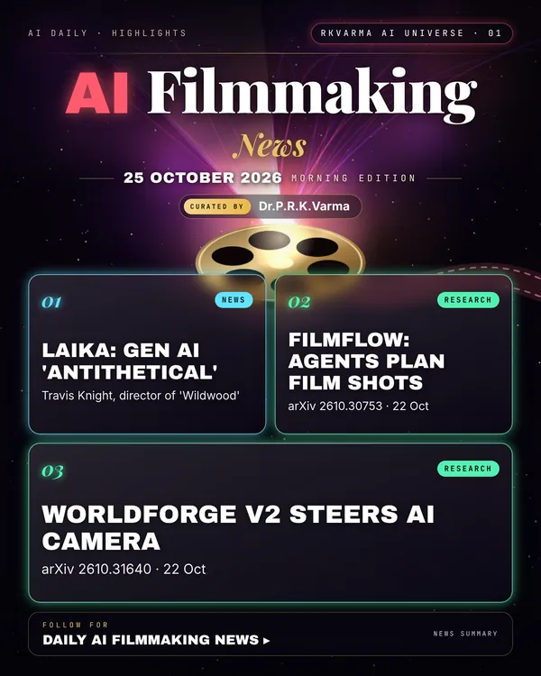

AI Filmmaking
Project page →1 minMore research papers in this category today → 6
A leading stop-motion studio rejects generative AI, while researchers build agents that plan camera moves and keep AI video on a set camera path.
Research, industry & policy
- Laika's Travis Knight calls generative AI 'antithetical' to the studio, Deadline · 22 Oct 2026: The Laika chief, who directed 'Wildwood', says generative tools run against the studio's handmade craft and hopes people recognise the danger.New today
Journals & preprints
- FilmFlow: Agentic System for 3D Virtual Film Cinematography, arXiv 2610.30753 · 22 Oct 2026: FilmFlow splits cinematography among director, interpreter, scout and critic agents that turn a text brief or reference clip into camera paths in 3D scenes, tested on a new CinemaBench.New today
- WorldForge V2: Eliciting Camera-Trajectory Alignment in Video Diffusion Models, arXiv 2610.31640 · 22 Oct 2026: A training-free method guides existing video diffusion models with warped reference frames and motion cues so generated clips follow a chosen camera path more closely.New today
Why it matters
Hand-made studios are drawing a clear line, even as research tools for AI camera work get more precise.

Was this section useful?